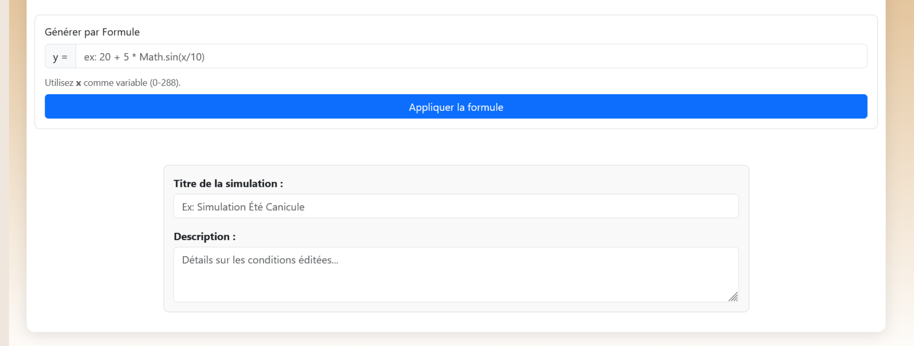

Dates du stage :
- Date début : Janv 01/012026
- Date fin : 13/02/2026
Entreprise : CEREEP-Ecotron IleDeFrance (CNRS)
Présentation de l’entreprise / société
CEREEP – Ecotron Île-de-France (Centre de Recherche en Écologie Expérimentale et Prédictive, UMS 3194) est une unité mixte de service portée par le CNRS, l’ENS-PSL et l’Université PSL, localisée à Saint-Pierre-lès-Nemours (Seine-et-Marne). Implantée sur un domaine de 78 ha, elle combine un bâtiment de recherche moderne, des espaces naturels, des capacités d'hébergement et plusieurs plateformes techniques au service de l’écologie expérimentale.
📑 Restitution de stage – Évolution et optimisation des outils
🔬 Contexte du stage
Pour ce second stage, l'objectif était de faire évoluer les outils développés l'an dernier. Alors que le premier stage portait sur l'acquisition de données historiques via NASA POWER, ce nouveau projet visait à :
Dans la continuité du premier stage au sein du CEREEP-Ecotron Île-de-France, ce second stage a été réalisé en duo. L'objectif était de consolider, sécuriser et d'étendre les capacités du système de gestion des données climatiques précédemment développé.
🌍 Programme 1 : Migration stratégique et résilience des données
L'utilisation exclusive de l'API NASA POWER présentait un risque critique de dépendance.
👉 Notre solution : Pour garantir la stabilité du projet, nous avons migré l'infrastructure vers Open-Meteo, un agrégateur européen souverain. - Centralisation des données issues des meilleurs instituts mondiaux (Météo-France, DWD allemand, ECMWF). - Remplacement d'une source unique par une solution multi-sources résiliente. - Garantie pour les chercheurs d'un accès permanent et performant.
🗺️ Programme 2 : Interface Utilisateur "Zéro Code"
L'objectif de cette version était d'effacer totalement la barrière technique pour les chercheurs, en rendant l'outil parfaitement intuitif.
Fonctionnalités développées :
- Sélection Géographique Visuelle : Intégration d'une carte interactive permettant de choisir un point géographique et des dates d'un simple clic (finie la saisie manuelle de latitude/longitude).
- Flexibilité de Stockage : Les chercheurs ont désormais le choix entre travailler en local ou déléguer totalement le stockage au serveur, libérant ainsi les ressources de leurs propres ordinateurs.


🧪 Programme 3 : Intelligence Mathématique et précision temporelle
Les API météo fournissent des données au format horaire, mais les automates des Ecolabs exigent une précision toutes les 5 minutes.
👉 Nous avons implémenté des algorithmes d'interpolation respectant la réalité physique de l'environnement : - Interpolation Linéaire : Utilisée pour calculer les variations fluides de température. - Interpolation PCHIP (Cubique) : Appliquée au rayonnement solaire afin de simuler une courbe de soleil réaliste et d'éviter les aberrations mathématiques.
⚡ Programme 4 : Optimisation des performances face au "Big Data"
L'augmentation de la précision des données (points toutes les 5 min) a provoqué une explosion du volume d'informations. Nous avons dû résoudre des problèmes d'optimisation lourds :
- Navigation par fragments (Pagination) : Pour maintenir une fluidité totale sur des graphiques contenant des centaines de milliers de points, l'affichage a été optimisé pour ne charger dynamiquement que les séquences utiles.
- Arbitrage Technique : L'exportation au format
.xlsxcréait des goulots d'étranglement. Nous avons revu le pipeline pour privilégier des formats de sortie haute performance (S/o CSV), garantissant une rapidité de traitement de bout en bout.
🛡️ Programme 5 : Sécurité et Innovation Scientifique
Le projet a pris une dimension critique nécessitant de nouvelles protections et des outils sur mesure pour la recherche :
- Cybersécurité Renforcée : Suite à des tentatives d'intrusions sur le réseau du CNRS, nous avons blindé l'accès à la plateforme via la mise en place d'un système de clés API et d'une journalisation (logs) exhaustive de chaque action.
- Créateur de Climats Artificiels : À la demande des chercheurs, nous avons développé un éditeur de points interactif. Cet outil permet de "dessiner" manuellement des scénarios climatiques extrêmes ou futuristes qui n'existent pas encore dans la nature, ouvrant de nouvelles perspectives d'expérimentation pour le CNRS.


✅ Bilan personnel
Ce stage de deuxième année m'a permis de travailler sur la maintenance et l'évolution d'un projet réel, tout en expérimentant la dynamique et les exigences du travail en binôme, une situation très courante en entreprise.
Compétences acquises
- Adaptabilité : Savoir modifier et améliorer un code que j'avais moi-même écrit un an plus tôt.
- Analyse technique : Savoir identifier les limites d'un système et se concentrer sur les priorités fonctionnelles.
- Expertise API : Maîtriser la transition entre deux fournisseurs de données différents tout en gardant une interface cohérente.
- Collaboration et Synergie (Travail en duo) : Apprendre à synchroniser le travail de développement à deux. Cette expérience m'a apporté une réelle rigueur dans la communication technique, la répartition efficace des tâches et la gestion partagée du projet. Elle m'a également prouvé l'importance de confronter ses idées pour résoudre des problèmes complexes plus rapidement.